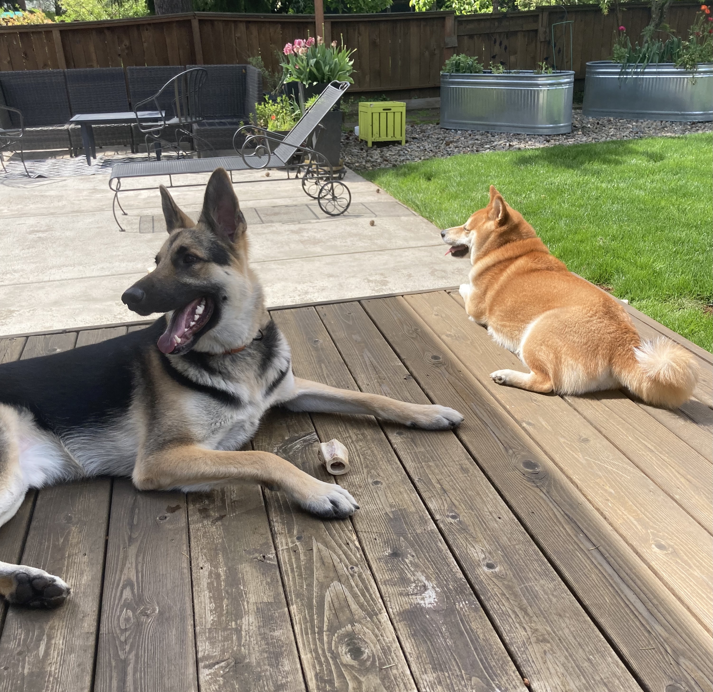
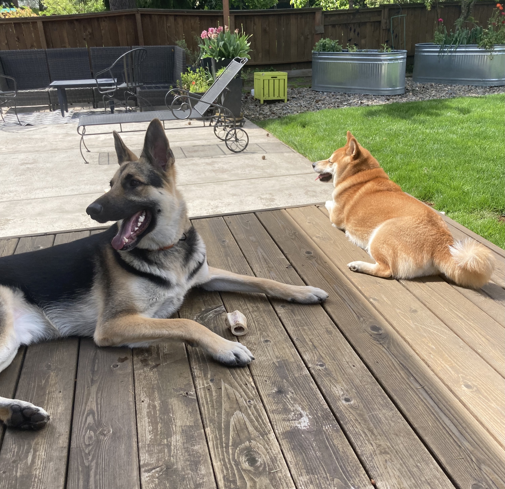

Hey there, my name is John Handley Williams III but you can just call me Jack. I'm a 31 year-old Portland local who recently moved outside the city for the first time since college. After high school I attended University of Victoria in British Coloumbia, Canada. Although I had a great experience there I decided to postpone my higher education for a couple years until I was more prepared. A couple years of being a pharmacy technician went by and I figured it was time to finish my degree so I enrolled in Portland Community College and then eventually transitioned to Portland State University where I earned a Bachelors of Science degree in Community Development. Now I'm currently residing in Oregon City with my girlfriend and our 3 dogs. It has been a fun and interesting adjustment from living on my own for the last decade or so. For the last 5+ years I've worked in the food industry, predomininantly as a cook, which I mostly enjoyed. There seems to come a time in the service industry grind where you want something different and for me that time had come. I learned about coding schools and programs through other people who made the switch from the service industry and Epicodus was the one that stood out. I appreciate the fact that it's in-person because I find that is how I learn best.